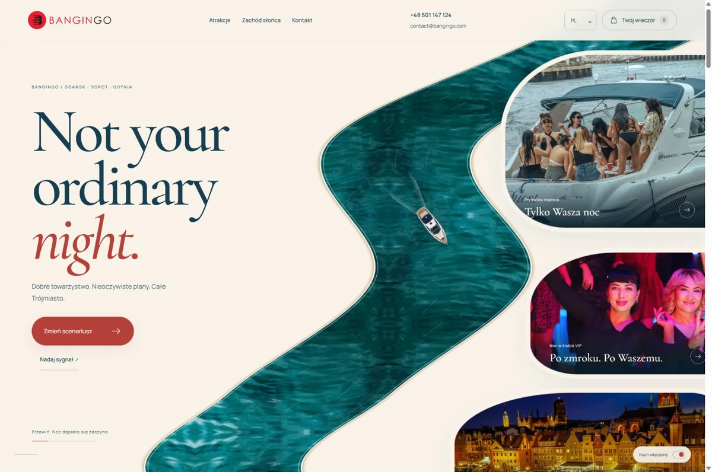
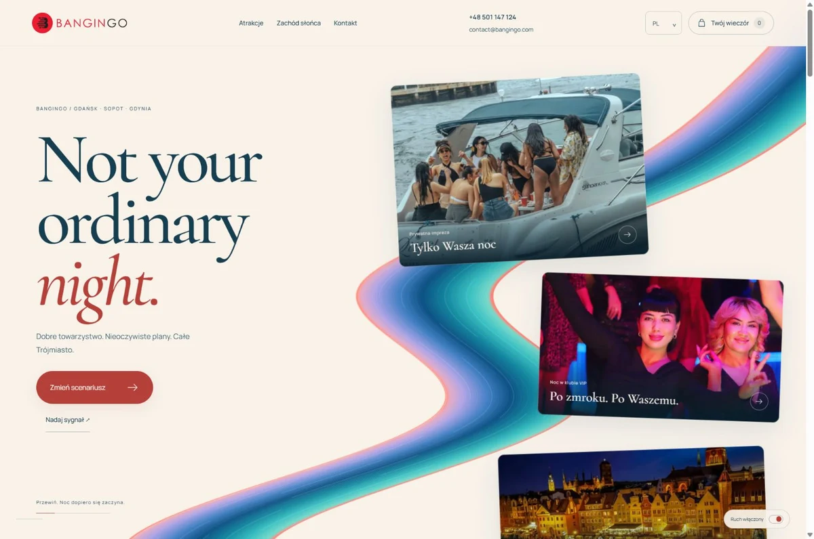

Wybierz swój nurt.
Ta sama noc. Dwie różne podróże.
Otwórz obie strony i przewiń — tu liczy się ruch.

01
River
Turkusowa woda, miękkie brzegi i jacht, który prowadzi Cię przez atrakcje.

02
Ribbon
Artystyczna wstęga w turkusie, kobalcie i koralu. Swobodny kolaż pełen koloru.
Oba kierunki mają 15 atrakcji, film z jachtu, 10 języków i ten sam kontakt. To lokalny ekran porównania — obecna strona publiczna pozostaje bez zmian.